The Journey
34 years. Four Airlines. Three Cruise Lines. Five-Star Hotels. Three Oceans. One consistent standard of excellence.
Companies I Have Worked With
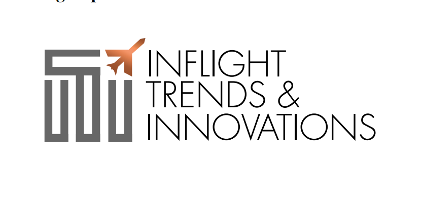
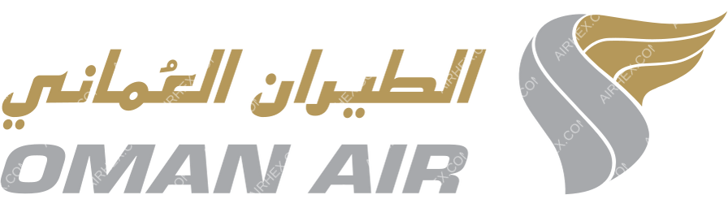
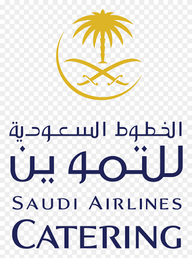
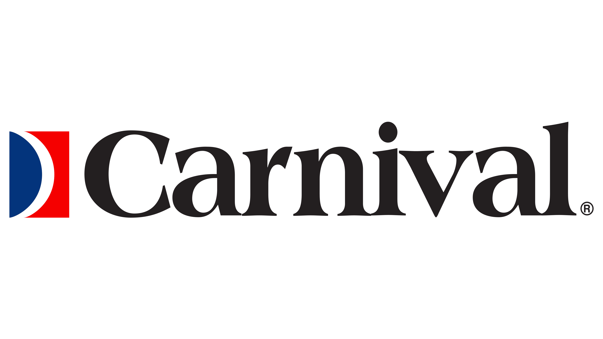
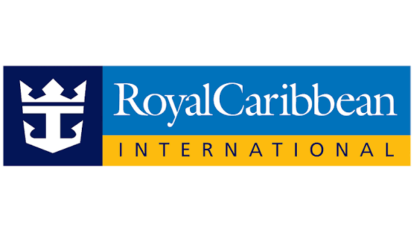
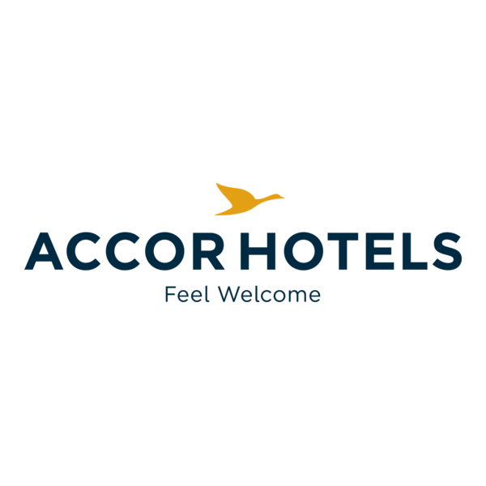
Managing Partner
Inflight Trends & Innovations · London, UK · Hybrid
48 Industry Leaders · 4 & 5-Star Airline Specialists · Global Reach
Leads an integrated network of 48 specialists across Middle East, Asia-Pacific, Europe, and Africa delivering transformational results for airlines, airport lounges, private aviation, and charter operations. Every engagement anchored to defined KPIs with full accountability to measurable outcomes.
Key Responsibilities
- Developed and delivered commercial catering calculations across 378+ airlines spanning full-service, hybrid, regional, domestic, low-cost, ultra low-cost, and private aviation, covering inflight catering, F&B product, inflight service, culinary standards, and inbound | outbound catering commercials
- Engaged and connected with 85+ airlines from a qualified pipeline of 250+ calculated operators, with transformative change programmes actively in progress across multiple carriers
- Built and manages a partner network of 75+ companies covering digital transformation across loading plan management, inflight catering systems, e-invoicing, e-sourcing, e-bidding, and onboard concept digitalisation
- Architected API integration frameworks connecting operational platforms to Sabre, Amadeus, and MSI ERP systems for end-to-end data connectivity
- Designed and deployed fully automated email outreach pipelines across the global airline network, zero manual intervention at scale
- Developed a complete galley loading plan library across all major aircraft types with loading standards broken down by carrier model: full-service, hybrid, low-cost, ultra low-cost, and regional
Verified Achievements
- 378+ airline commercial calculations completed, broadest independent catering commercial coverage in the region
- 85+ airlines engaged from cold outreach to active pipeline, driven entirely through automated intelligence systems
- 75+ strategic industry partnerships established spanning the full inflight ecosystem: digital transformation platforms, ERP and API integration providers, frozen meal manufacturers, food and beverage suppliers, wine and spirits distributors, amenity and comfort product companies, onboard equipment and galley hardware suppliers, chinaware and tableware manufacturers, inflight entertainment product providers, cabin service equipment specialists, and all onboard product and service categories connected to inflight catering operations
- Full-spectrum airline model coverage achieved: FSC · Hybrid · Regional · Domestic · LCC · ULCC · Private Aviation
- Zero-overhead outreach architecture built and deployed independently, no agency, no team, no manual process
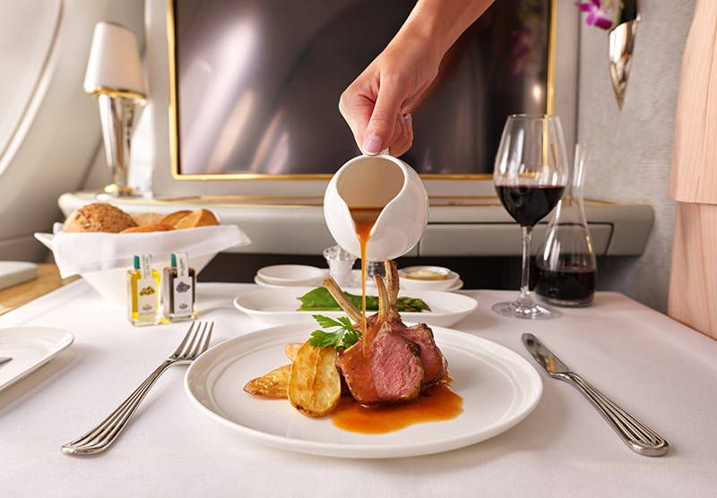
Product Developer | Culinary Development | Transformation
Saudi Airlines · Jeddah, Saudi Arabia · On-Site
Culinary product development and transformation mandate delivering new product pipelines and culinary standard uplift across the Saudi Airlines network.
Key Responsibilities
- Tasked to work alongside the catering operations team across Saudi Airlines hub in Jeddah and all outbound stations, driving transformative efficiency planning covering equipment, processes, and operational standards across the full domestic and international network
- Worked alongside the culinary development team on new product pipelines, new plating concepts, new service standards, and new service process design across all cabin classes
- Collaborated with the VP of Product Development on new First Class, Business Class, and Economy Class concepts including equipment specification and service delivery standards across all sector types: ultra short-haul, short-haul, medium-haul, long-haul, and ultra long-haul
- Reported directly to the Chief Customer Experience Officer with full accountability for efficiency delivery, savings identification, and transformative product and service outcomes
Verified Achievements
- Transformation of all Economy Class inbound meal products from European stations to Saudi Arabia, generating verified savings of approximately USD 38 million across the economy class product category
- Successfully contributed to new multi-class product and service concepts across all cabin categories and all sector types within the Saudi Airlines network
- Delivered measurable catering efficiency outcomes across hub and outbound station operations through collaborative transformation planning with the catering operations team
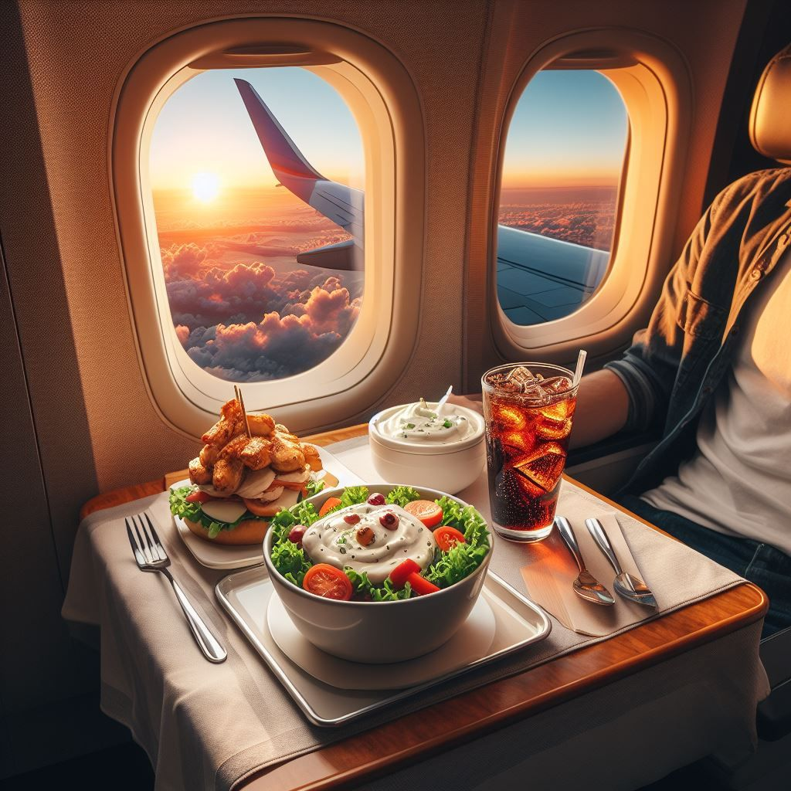
Senior Manager Food & Beverage | Catering Operation | Development
Oman Air · Muscat, Oman · Complete Global Network
200+ Destinations · Full P&L Ownership · C-Suite Direct Report · Annual Halal & Quality Audit Across All Routes
Key Responsibilities
- Executive oversight of complete catering operations: quality assurance, regulatory compliance, financial management, budget optimization
- Strategic management of all commercial contracts and SLAs for base catering and outstation operations across the global network
- Annual Halal certification audits conducted across entire route network, every destination, every year
- Galley loading plan ownership and equipment inventory management across full global network; e-sourcing and e-billing system design and implementation
- Established meal uplift standards for commercial, cargo, CIC inspections, charter, and VVIP operations
- Executive leadership of Privilege Program operations and strategic enhancement initiatives
Verified Achievements
- Cellar in the Sky Award 2019, 2021, 2022, 2023: Ranked 3rd globally for wine selection excellence
- USD 358,426,158 (OMR 138M) verified total EBITDAR efficiency gains 2017–2023
- 38% average annual cost reduction through strategic procurement and operational efficiency
- Skytrax 5-Star APEX Awards: 2018, 2019, 2020, 2021, 2022, 2023 (six consecutive years)
- Skytrax global ranking elevated from 53rd (2017) to 27th worldwide (2023)
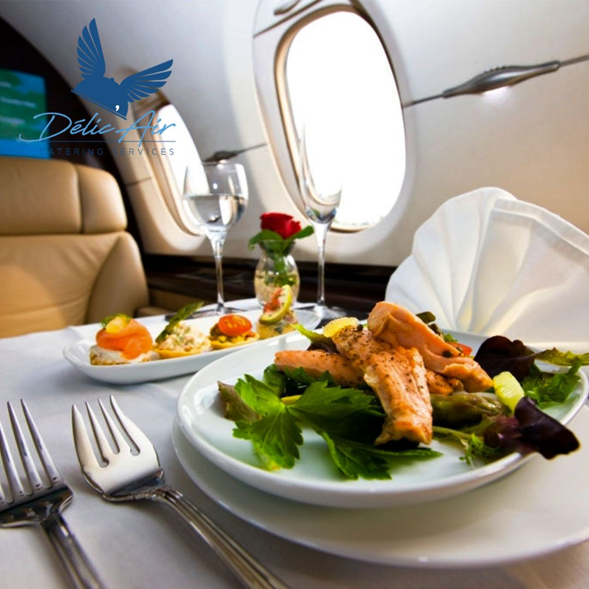
Executive Chef
Saudi Airlines Catering Company · Saudi Arabia
14 Commercial Entities · Saudi Airlines · FlyNAS · Royal Flights · 18 Executive Lounges · 55,000+ Meals Daily
Key Responsibilities
- Commanded complete food and beverage operations across 14 commercial business entities including Saudi Airlines, foreign airline contracts, FlyNAS, Royal flights, charter operations, VIP services, and 18 executive lounges serving 55,000+ meals daily
- Held full financial accountability for labor costs, commercial client pricing, private aviation services, lounge operations, and private function catering across all entities simultaneously
- Led quality assurance and quality control systems across all operational divisions, maintaining regulatory standards across a highly complex multi-entity operation
- Directed strategic workforce development and comprehensive training program implementation for a large multicultural staff base across diverse operational environments
- Led innovation in recipe development, concept creation, and culinary advancement initiatives across all entities under the mandate
- Coordinated cross-functionally with purchasing, warehouse, and technical teams ensuring inventory optimization, waste elimination, expiry control, and company standard compliance throughout
Verified Achievements
- Designed and implemented a new Daily Booking List (DLB) system, delivering a verified 40% reduction in processing time across the operation
- Transformed management dining standards: complete menu redesign and implementation across 18 executive lounges, aligned with International Food Court (IFC) standards
- Redesigned catering workflow processes delivering a verified 20% labor cost reduction while maintaining full service quality standards across all entities
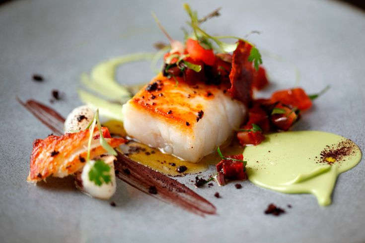
Culinary & Product & Development
Qatar Airways · Doha, Qatar · APAC | Far East Asia | China | Africa
Multi-Region Network · 72+ Destination Station Startups · QOSMOS Digital System · 220 Destinations Zero-Paper
Key Responsibilities
- Held regional culinary leadership for Qatar Airways across APAC, Far East Asia, China, and Africa, overseeing culinary and catering standards across multiple international markets simultaneously
- Spearheaded the QOSMOS digital transformation initiative, delivering fully digitalized zero-paper catering operations across 220 destinations, covering inventory management, finance, receiving, offload reporting, and end-to-end performance tracking
- Conducted full meal presentations and culinary reviews across the entire APAC, Africa, and Far East network, personally traveling to destination stations, leading reviews, and signing specifications
- Managed tender processing and commercial contract signings across the regional supplier base, ensuring cost-effective and quality-aligned procurement standards
- Led station startup operations for 72+ new destinations from zero, establishing full culinary standards, creating processes, and documenting procedures for each new station
- Drove premium product innovation including new chinaware introduction, celebrity chef program implementation, and economy class amuse-bouche concept launch across the regional network
Verified Achievements
- Architected and delivered the QOSMOS system across 220 Qatar Airways destinations, transforming the airline catering operation from paper-based to fully digitalized end-to-end, a regional first of its kind
- Delivered 72+ station startups from zero operational infrastructure, covering 131+ destinations across APAC, Far East Asia, Africa, and international markets
- Successfully introduced premium service innovations including celebrity chef programs, new chinaware standards, and economy class amuse-bouche, elevating Qatar Airways onboard product across the regional network
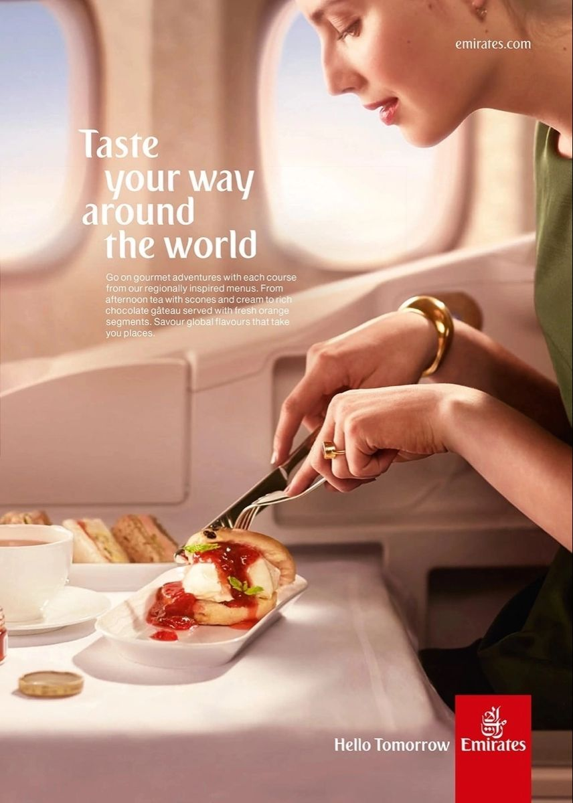
Corporate Executive Chef
Philippine Airlines · Philippines
35,000 Daily Meals · 280 Culinary Professionals · 62 Destinations (31 Domestic + 31 International) · 20 Countries
Key Responsibilities
- Commanded Philippine Airlines complete catering operation, overseeing daily production of 35,000 meals spanning 62 destinations across 20 countries, encompassing inbound and outbound operations across 31 domestic and 31 international routes
- Led a culinary brigade of 280 professionals across all production kitchens, with full responsibility for performance standards, development programs, and operational excellence
- Held complete P&L accountability for the airline catering operation including multi-million-dollar commercial contracts, SLA management, and cost optimization across labor, materials, and operations
- Established and managed strategic partnerships with JAL, Korean Air, luxury hotel groups, and celebrity chefs, enhancing competitive positioning and service differentiation across all flight classes
- Managed international meal presentation standards across all overseas stations, ensuring consistent quality and service excellence across every destination in the global network
- Led comprehensive meal planning, uplift scheduling, portion control, and production workflow systems for full operational efficiency across the complete route network
Verified Achievements
- Delivered consistent 35,000 daily meals across a complete inbound and outbound network of 62 destinations spanning 20 countries, maintaining operational precision across the full Philippine Airlines route network
- Developed and led a culinary brigade of 280 kitchen professionals to sustained high-performance standards across all production environments
- Established strategic partnerships with JAL and Korean Air, positioning Philippine Airlines catering as a preferred partner for international airline meals on key regional routes
- Directed all menu development and innovation across all flight classes, creating consistently distinctive dining experiences aligned with brand standards and diverse international passenger expectations
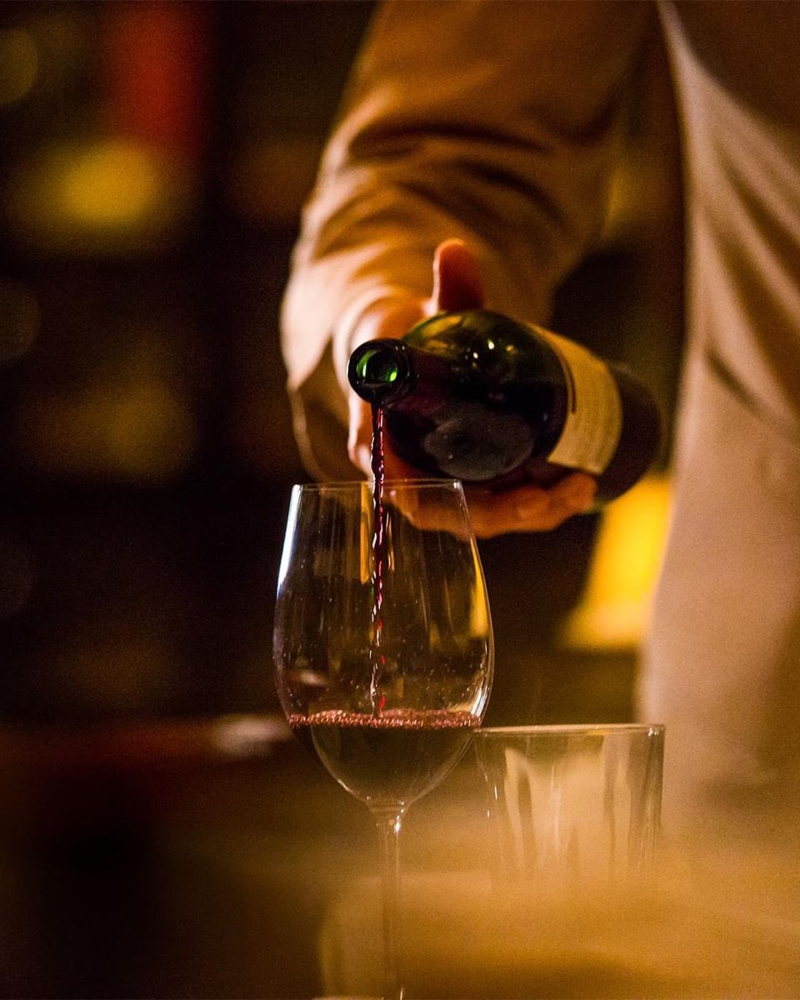
Executive Chef | Culinary Operations Leader
Holland America Line · Greater Seattle Area
3 Vessels · Vista & Signature Class · Up to 190 Kitchen Professionals · 7 to 8 Dining Venues · 100% USPH
Vessels
- MS Eurodam · Executive Chef · 1,052 staterooms · 1,916 passengers · 800 crew · Brigade of 185 · 7 dining venues
- MS Westerdam · Executive Chef · 982 staterooms · 1,916 passengers · 800 crew · Brigade of 190 · 8 dining venues
- MS Oosterdam · 2nd Executive Chef · 982 staterooms · 1,916 passengers · 800 crew · Brigade of 180 · 7 dining venues
Key Responsibilities
- Led food and beverage operations across three Vista and Signature class vessels, each carrying over 900 staterooms and equivalent in accommodation scale to a major 5-star hotel property, serving nearly 3,000 persons daily
- Commanded kitchen brigades of 180 to 190 culinary professionals per vessel across 7 to 8 dining venues on Caribbean, Mediterranean, and Pacific itineraries
- Held full financial accountability for multi-million-dollar food and beverage cost centers with direct responsibility for procurement, labor, provisions, and operational performance
- Directed complex global provisioning operations across international port calls, ensuring supply chain integrity and cost optimization across three vessels simultaneously
- Led cross-functional teams through multi-jurisdictional compliance requirements across diverse international port authorities and maritime regulatory frameworks
- Developed and mentored kitchen leadership across all three vessels through structured training programs and performance management systems
Verified Achievements
- Maintained 100% United States Public Health (USPH) compliance with zero food safety incidents across all three vessel assignments covering Caribbean, Mediterranean, and Pacific itineraries throughout the entire tenure
- Commanded food and beverage operations across vessels collectively representing over 3,000 staterooms of luxury guest accommodation, comparable in scale to a major international 5-star hotel group
- Successfully delivered premium culinary operations across multiple vessel assignments simultaneously, maintaining consistent guest dining standards across three of Holland America Line flagship deployments
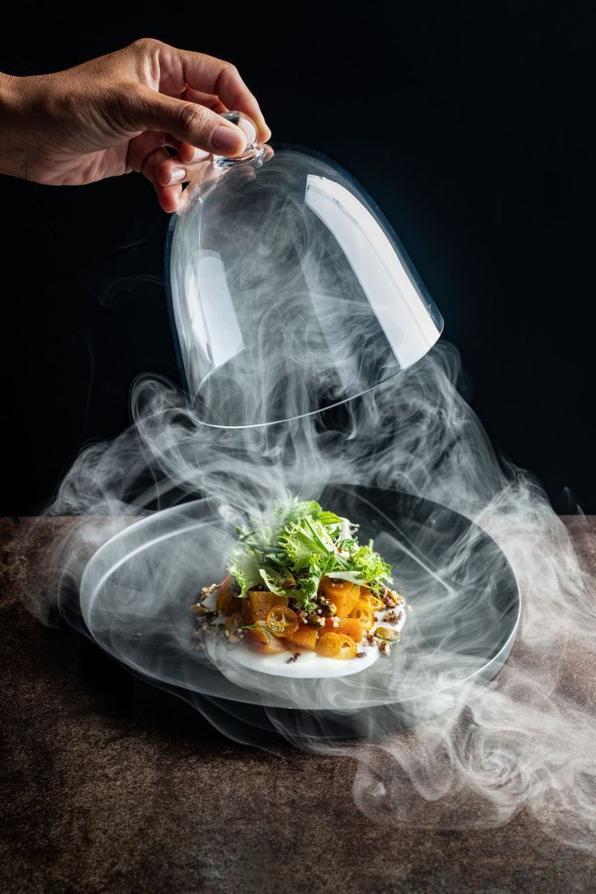
Executive Chef | Chef de Cuisine
Carnival Cruise Lines · Miami–Fort Lauderdale Area
4 Vessels · Conquest & Destiny Class · Up to 177 Kitchen Professionals · 9 Dining Venues · 4,000+ Persons Daily · 100% USPH
Vessels
- Carnival Glory · Executive Chef · 1,490 staterooms · 2,974 passengers · 1,100 crew · Brigade of 168 · 9 dining venues
- Carnival Destiny · Executive Chef · 1,321 staterooms · 2,642 passengers · 1,100 crew · Brigade of 140 · 9 dining venues
- Carnival Victory · Executive Chef · 1,321 staterooms · 2,642 passengers · 1,100 crew · Brigade of 152 · 9 dining venues
- Carnival Liberty · Executive Chef · 1,482 staterooms · 2,974 passengers · 1,160 crew · Brigade of 177 · 9 dining venues
Key Responsibilities
- Commanded complete food and beverage operations across four major Carnival Cruise Line vessels, serving over 4,000 guests and crew daily across 9 dining venues per vessel on Caribbean and Mediterranean itineraries
- Led kitchen brigades of 140 to 177 culinary professionals per vessel, maintaining consistent food service excellence across high-volume commercial cruise environments
- Held full financial accountability for multi-million-dollar food and beverage cost centers with direct responsibility for labor, provisions, waste control, quality standards, and procurement
- Directed strategic provisioning operations and vendor relationship management across major Caribbean and Mediterranean ports under fast-paced commercial turnaround environments
- Led cross-functional kitchen leadership teams through comprehensive training programs, performance management, and career succession planning
- Managed complex multi-jurisdictional compliance requirements across diverse international port authorities throughout all Caribbean and Mediterranean routes
Verified Achievements
- Maintained 100% United States Public Health (USPH) compliance with zero food safety incidents across all four vessel assignments covering Caribbean and Mediterranean itineraries throughout the entire tenure
- Commanded food and beverage operations across four vessels collectively representing over 5,600 staterooms of guest accommodation, an operational footprint comparable in scale to a major luxury resort group
- Successfully maintained premium guest dining experiences across four concurrent vessel assignments spanning two distinct Carnival fleet classes
- Implemented effective crisis management protocols ensuring uninterrupted food service continuity across all emergency situations and operational disruptions on all four vessels

Executive Sous Chef | Executive Chef
Royal Caribbean International · Miami, Florida
4 Vessels · Vision, Radiance & Sovereign Class · Up to 165 Kitchen Professionals · 100% USPH Compliance
Vessels
- Enchantment of the Seas · Executive Sous Chef · 1,142 staterooms · 2,744 passengers · 850 crew · Brigade of 130 · 7 dining venues
- Monarch of the Seas · Relief Executive Chef · 1,198 staterooms · 2,375 passengers · 840 crew · Brigade of 130 · 6 dining venues
- Brilliance of the Seas · Relief Executive Chef · 1,074 staterooms · 2,144 passengers · 765 crew · Brigade of 155 · 6 dining venues
- Majesty of the Seas · Relief Executive Chef · 1,100 staterooms · 2,730 passengers · 850 crew · Brigade of 165 · 7 dining venues
Key Responsibilities
- Served at Executive Sous Chef and Relief Executive Chef level across four Royal Caribbean International vessels, supporting culinary operations for up to 2,744 guests and 850 crew per vessel across Caribbean and international itineraries
- Led and supported kitchen brigades of 130 to 165 culinary professionals, ensuring high-performance food and beverage operations across multiple dining venues serving diverse international passenger profiles
- Supported multi-million-dollar food and beverage cost center management with direct contributions to procurement strategy, cost control, and quality assurance across global itineraries
- Directed complex provisioning and supply chain operations across global port calls, maintaining quality standards under demanding commercial cruise turnaround timelines
- Progressed through Relief Executive Chef assignments across multiple vessel classes, demonstrating operational versatility and leadership readiness across Vision, Radiance, and Sovereign class deployments
Verified Achievements
- Maintained 100% United States Public Health (USPH) compliance with zero food safety incidents across all four vessel assignments covering Caribbean and international itineraries throughout the entire tenure
- Commanded culinary operations across four vessels collectively representing over 4,500 staterooms of guest accommodation, an operational scale equivalent to a major international hotel group
- Completed four vessel assignments across three distinct Royal Caribbean ship classes within a single tenure, demonstrating breadth and versatility across the full spectrum of maritime culinary operations
- Elevated to Relief Executive Chef status across multiple assignments, reflecting consistent performance and trust at the highest culinary leadership level within the Royal Caribbean fleet
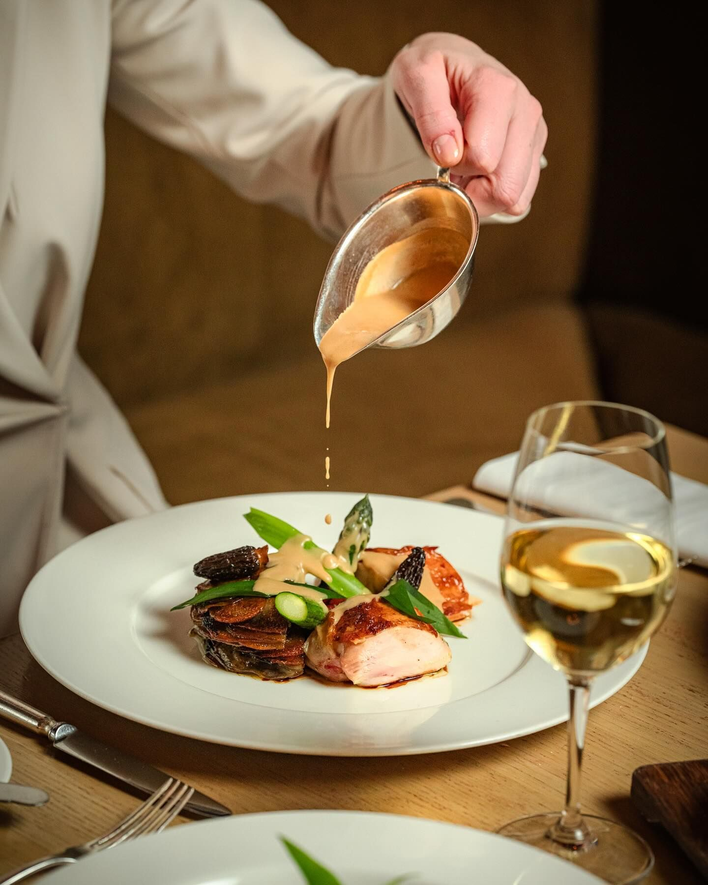
Executive Sous Chef
2000 Sydney Olympics | Blue Rock Catering · Sydney, Australia
3 Major Venues · 286 Culinary Professionals · North Head Manly · Fox Studios · Homebush Stadium
Key Responsibilities
- Led and coordinated culinary operations across three simultaneous Olympic venues, North Head of Manly, Fox Studios, and Homebush Stadium, during one of the world most high-profile international sporting events
- Managed and coordinated a brigade of 286 culinary professionals, ensuring seamless food service delivery across multiple concurrent venues with complex logistics and strict operational timelines
- Oversaw food preparation and service operations across diverse venue types, each with distinct high-volume requirements, diverse guest profiles, and demanding schedules across the full 4-month Olympic period
- Ensured full compliance with stringent food safety, hygiene, and quality standards across all venues throughout the entire Olympic operational period
- Maintained operational excellence serving international athletes, officials, media representatives, and VIP guests simultaneously across three major venues under sustained extreme-pressure conditions
Verified Achievements
- Successfully commanded culinary operations across 3 simultaneous Olympic venues during the 2000 Sydney Olympics, one of the most demanding multi-site food service operations in international sporting history
- Coordinated a brigade of 286 culinary professionals across venues, maintaining consistent output quality and timing standards throughout the full 4-month duration
- Zero food safety incidents maintained across all venues throughout the entire Olympic period, delivering food service to athletes, officials, and VIP guests of more than 200 nations
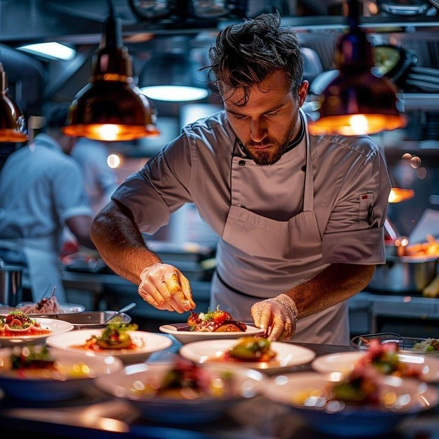
Executive Chef | Contract & Agency Placements
Le Cordon Bleu Personnel · Queensland, Australia
Multiple Concurrent Placements · Convention Centres · Luxury Resorts · Government Facilities · 2,500-Person Military Catering
Contract Placements
- Executive Sous Chef, Brisbane Convention Centre (Jul to Nov 1999) · Greater Brisbane Area
- Executive Chef, Couran Cove Resort (Jan to Apr 1999) · Stradbroke Island, Gold Coast
- Executive Chef, Singapore National Service Training (Jul to Nov 1999) · 2,500-person military catering, Rockhampton
- Executive Chef | Culinary Consultant, Surfer’s Paradise Investments (Apr to Jul 1998) · Concurrent operation of 5 food concepts: Tuscan Delicatessen, Indian Restaurant (140 seats), Chinese Restaurant (160 seats), Butchery, Mediterranean Bakery
- Executive Sous Chef, Hyatt Regency Sanctuary Cove Resort (Jan to Mar 1998)
- Culinary Instructor, Queensland Correctional Center (Jul to Dec 1998) · Wacol, Brisbane
Key Responsibilities
- Led diverse culinary operations across convention centers, 5-star luxury resorts, government facilities, and award-winning restaurant concepts through strategic contract placements across Queensland and international postings
- Delivered large-scale catering operations including 2,500-person military catering for Singapore National Service Training, demanding precision logistics and sustained high-volume output over an extended period
- Managed the simultaneous opening and operation of five distinct food service concepts under a single mandate, covering fine dining, casual dining, retail butchery, and artisan bakery in parallel
- Delivered government contract culinary programs at Queensland Correctional Center, developing culinary skills and professional standards in a structured institutional environment
- Maintained premium culinary standards across 5-star resort properties including Hyatt Regency Sanctuary Cove and Couran Cove Resort, adapting operations to diverse guest profiles and luxury brand expectations
Verified Achievements
- Successfully managed the concurrent launch and operation of 5 distinct food service concepts simultaneously under a single executive mandate, spanning dining, retail, and artisan food production
- Delivered 2,500-person military catering for Singapore National Service Training, one of the highest-volume single-event food service operations across the contract period
- Achieved Brisbane Courier Mail restaurant award recognition during this period, confirming consistent culinary excellence across the diverse contract portfolio

Executive Chef
Café Citrus · Bulimba, Brisbane, Queensland, Australia
120-Seat Fine Dining Restaurant · Brigade of 18 · Gourmet Magazine & Vogue Cuisine Featured
Key Responsibilities
- Led all kitchen operations for a 120-seat fine dining restaurant, directing a brigade of 18 culinary professionals to consistent standards of culinary excellence and guest satisfaction
- Drove menu development, kitchen workflow design, and quality control systems that positioned the restaurant as a recognised leader in the competitive Brisbane fine dining market
- Maintained full food safety and hygiene compliance throughout all operational periods in a high-volume fine dining environment
- Developed innovative menu concepts that attracted national culinary media attention and built the restaurant brand within Queensland fine dining circles
Verified Achievements
- Secured national media recognition through features in Gourmet Magazine and Vogue Cuisine Magazine, establishing the restaurant as a benchmark for culinary innovation and quality standards in Brisbane
- Achieved Brisbane Courier Mail restaurant award recognition, independently confirming consistent culinary excellence throughout the tenure
- Successfully led a brigade of 18 culinary professionals to sustained high performance in a 120-seat fine dining environment, building team capability and menu standards from the ground up

Sous Chef
Hilton Worldwide · Cairns, Queensland, Australia
Mondo Café Bar and Grill · Brigade of 32 · Rapid Promotion CDP to Sous Chef within 12 Months
Key Responsibilities
- Managed daily kitchen operations at Mondo Café Bar and Grill, leading a brigade of 32 culinary professionals to consistent food quality and service standards aligned with Hilton international benchmarks
- Contributed to menu development, seasonal programming, and kitchen workflow optimization across the full restaurant operation
- Maintained strict food safety, hygiene, and quality control protocols in accordance with Hilton global operating standards throughout all operational periods
- Collaborated with executive culinary leadership to build kitchen efficiency, team performance, and guest satisfaction metrics across the property
Verified Achievements
- Progressed from Commis de Partie (CDP) to Sous Chef within a 12-month period at Hilton Worldwide, one of the most rapid promotions achievable within the Hilton culinary structure
- Led a brigade of 32 kitchen professionals to consistent delivery of Hilton international culinary standards across all service periods at Mondo Café Bar and Grill
- Established the culinary leadership foundation that would drive a 34-year career across international airlines, cruise lines, and 5-star hospitality operations globally
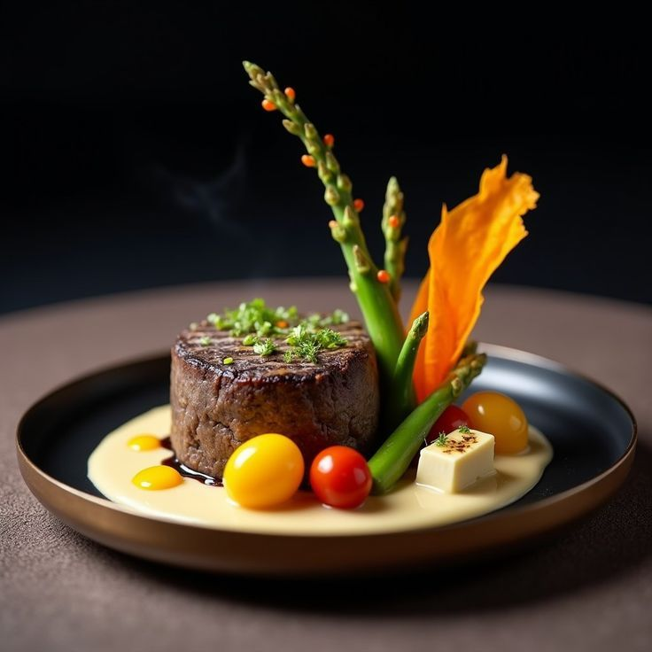
Apprenticeship | Chef de Partie
Accor Oasis Resort · Queensland, Australia · 4 Years 5 Months
Full Formal Culinary Apprenticeship · Four-Year Progression · Certificate CN200/210 Qualified Chef/Pastry
Career Progression
- Chef de Partie (Apr 1994 to Jun 1995) · Senior kitchen leadership at the Oasis Resort following completion of the apprenticeship program
- Apprentice, 4th Year (Nov 1993 to Apr 1994) · Advanced culinary techniques and kitchen management systems
- Apprentice, 3rd Year (Dec 1992 to Nov 1993) · Pastry, garde manger, and hot kitchen rotations
- Apprentice, 2nd Year (Feb 1992 to Nov 1992) · Classical French technique and resort dining standards
- Apprentice, 1st Year (Feb 1991 to Jan 1992) · Foundations of professional cookery and kitchen craft
Key Responsibilities
- Completed a full formal culinary apprenticeship across all kitchen departments at Accor Oasis Resort, progressing systematically through every discipline including pastry, garde manger, hot kitchen, and kitchen management
- Developed classical French culinary techniques and international resort dining standards under structured mentorship within a 5-star Accor property environment
- Elevated to Chef de Partie following apprenticeship completion, taking on direct kitchen leadership responsibility within the resort kitchen brigade
Verified Achievements
- 1993 Salon Culinaire, Cairns: 2 Gold Medals (Hot Cookery)
- 1992 Salon Culinaire, Townsville: 1 Gold Medal (Hot Cookery), 2 Silvers (Non-edible and Table Settings)
- 1992 Black Box, Auckland: 2 Gold Medals (Hot Cookery)
- Graduated with Certificate CN200/210 Qualified Chef/Pastry from Cairns Institute of TAFE
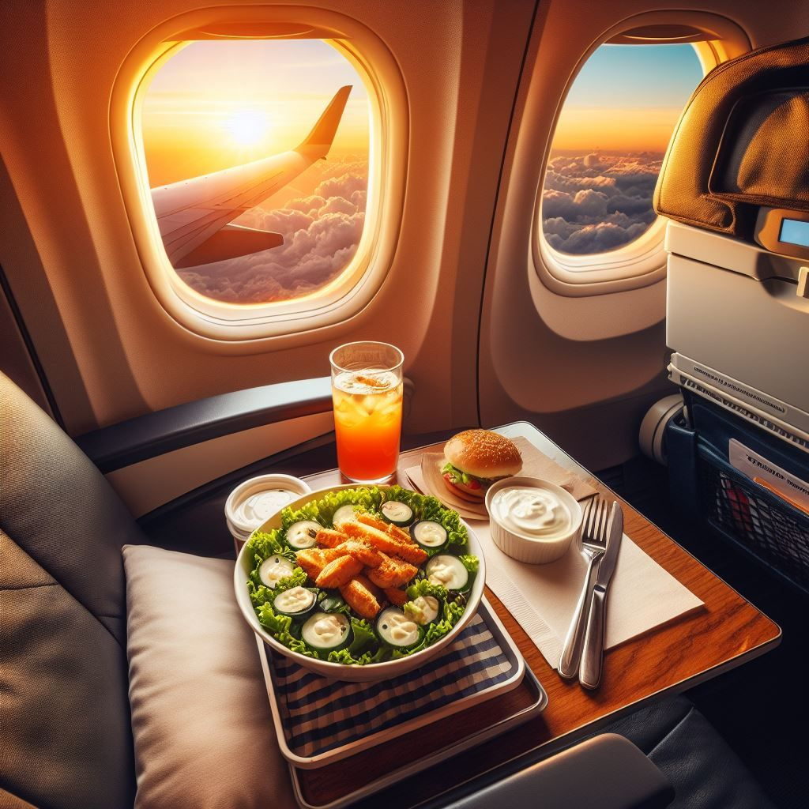
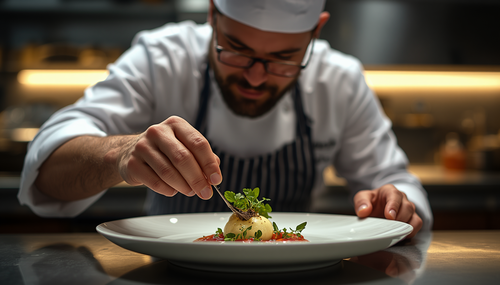
sector-cruise.jpg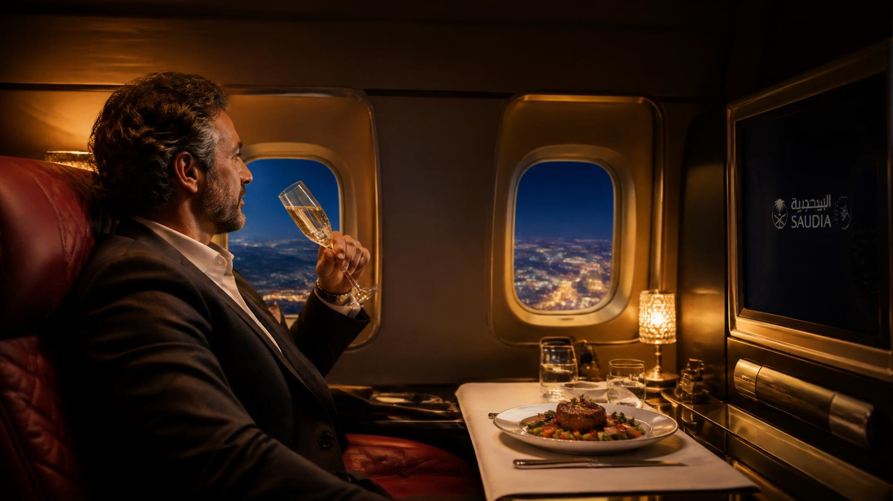
sector-airline.jpg